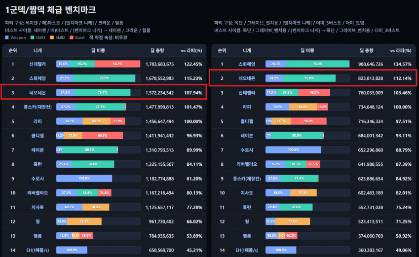
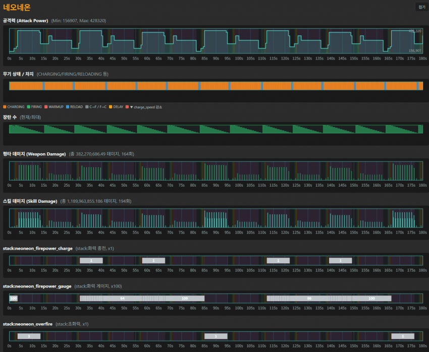

계산 조건
싱크400, 장비5555, 재장큡15, SR15, 풀돌, 호감도 MAX(30 or 40), 코어X, 관통X, 파츠X, 비우코, 스킬 101010
적 방어력 31784 (솔레기준), 콘솔레벨 일반/유형/기업 = 300/150/150, 전탄 명중
오버옵 : 우코 80%(단, 우코 활성 벤치마크에서만 작동), 공증 20%, 장탄 100%
예외) 프리바티 : 장탄 0%
버스트 충전시간 2초, 버스트 단계 당 딜레이 0.5초(자동버스트 사용기준)
-> 풀버X 3.5초 + 풀버O 10초가 한 사이클
시뮬레이션 시간 : 180초 (13사이클+a)
1군덱 벤치마크 세팅
덱구성 : 세이렌 메스트 (벤치마크 딜러) 헬름 크라운
버스트 사용 순서 : 세이렌-메스트-(벤치마크딜러) -> 세이렌-크라운-헬름 반복
짬덱 벤치마크 세팅
덱구성 : 애목단 그레이브 (벤치마크 딜러) 더미3버 더미토템
버스트 사용 순서 : 목단-그레이브-(벤치마크 딜러) -> 목단-그레이브-더미3버 반복


체급결론 : 1.07라피
수정1) 스킬2 화력충전 버프 종료시 45중첩 증가 효과 발동되지 않던 버그 수정
1군덱 딜 1469449046 -> 1572234542 1.069%증가
짬덱 딜 760871186 -> 823813828 1.082%증가
+) 추가로 구현하면서 실수해서 딜이 바뀌는 경우가 있으면 제목에 (수정 n)으로 바꾸고 수정내역 첨부할테니 종종 확인해줘
++) 돌니스는 어떤식으로 평가하면 좋을지 의견 남겨주삼!! 나중에 취합해서 올릴게 예시) 세크라헬마 -> 돌크라헬마 비교하기